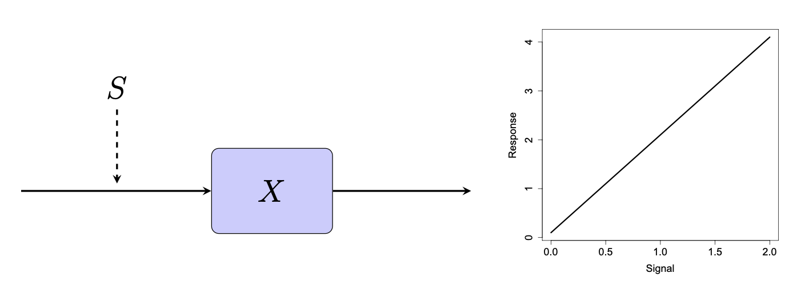
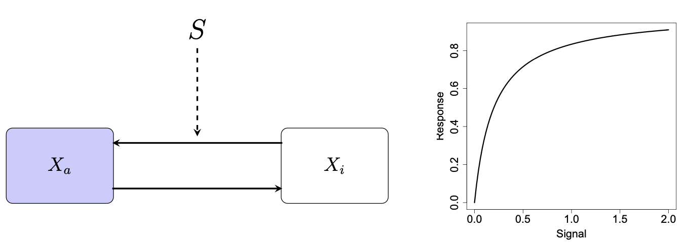
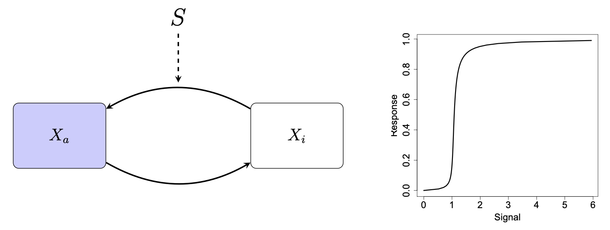
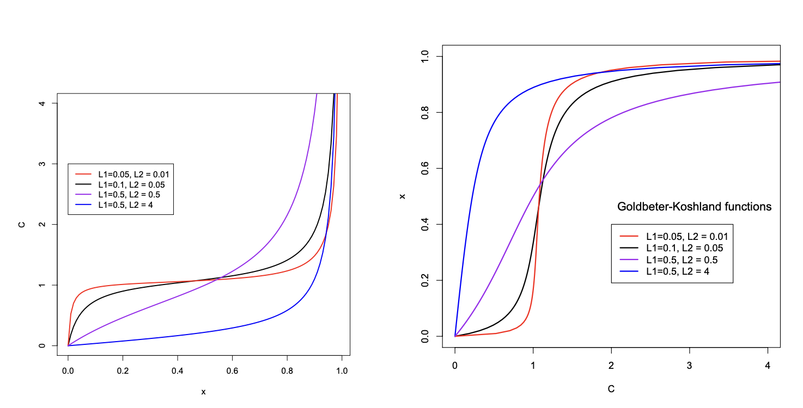
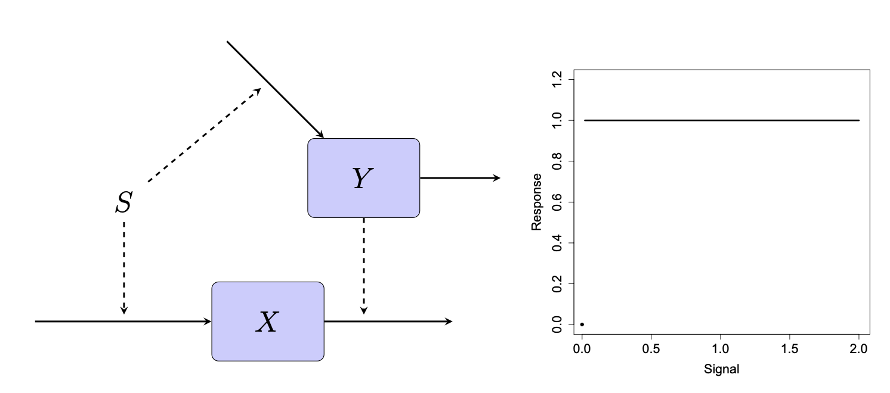
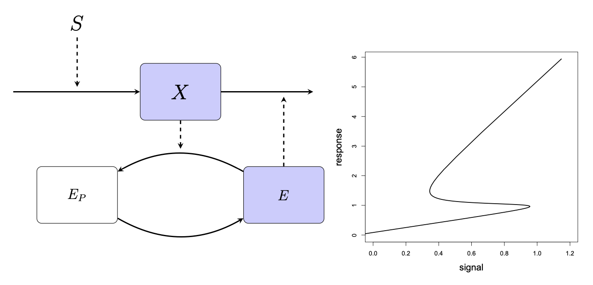
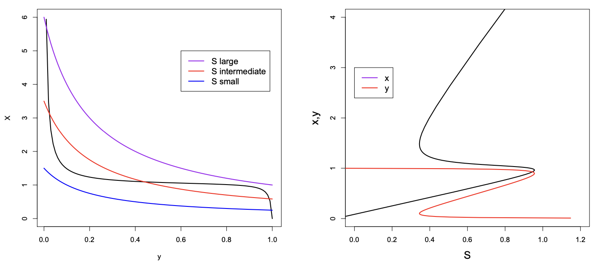
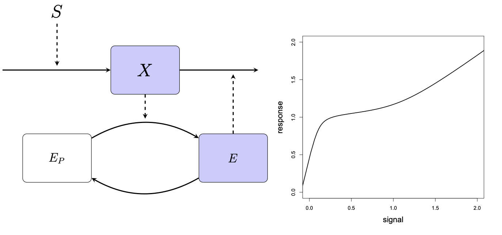
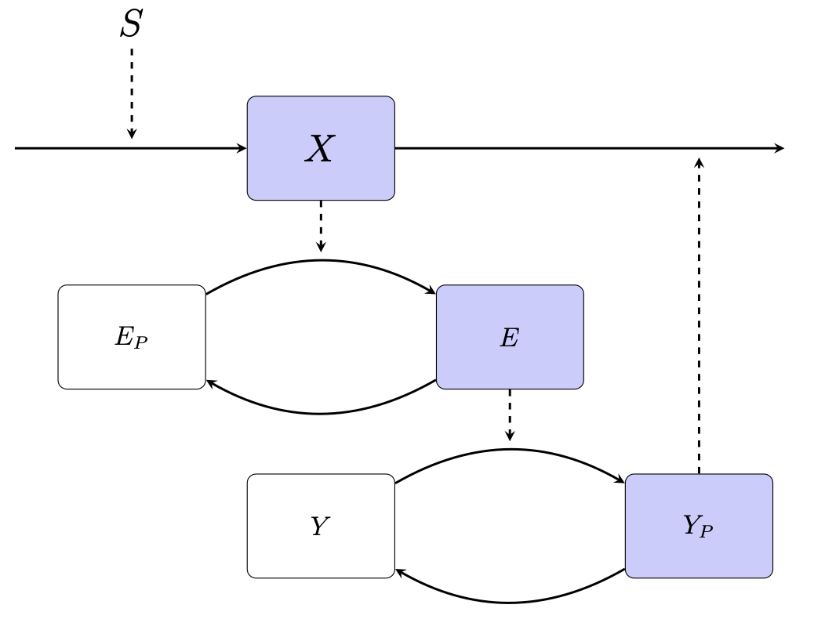

11 Feedback loops
This lecture is based on (Keener and Sneyd 2009, vol. 8/I, sec. 1.4.6)
11.1 Feedback loops
Actual molecular networks consist of a large number of molecular species with very complex patterns of interaction among them. We have seen the lac operon for instance.
Wishing to go beyond the simple reactions analyzed in the previous lectures, the natural next step is to consider reaction loops, i.e. networks with two molecular species, each acting on the rates, either of synthesis or of decay, of the other. Since the overall action may be positive (favouring the synthesis or inhibiting the decay) or negative (favouring the decay or inhibiting the formation), in principle there are 3 possible cases:
- mutual activation: each molecular species has a positive effect on the other;
- mutual inhibition: each has a negative effect on the other;
- activation-inhibition: one has a positive effect on the other, which has a negative on the first one.
This matches exactly the Kolmogorov formalist in ecology: mutualism, competition, prey-predator.
We distinguish two kinds of feedback loops: positive and negative. Each can be realized in several different reaction schemes and each reaction may be modeled as linear or Michaelis-Menten-type or cooperative. The dynamical properties will then depend on the details of reactions; we will show however (by way of examples) that there are some common properties of positive vs. negative feedback loops.
As an initial point, we discuss how the concentration of a substance responds to a stimulus that increase its rate of synthesis in some simple reaction schemes. This is inspired to the article “Sniffers, buzzers, toggles and blinkers: dynamics of regulatory and signaling pathways in the cell”, by Tyson, Chen, and Novak (2003). that classified the schemes according to the type of the signal-response curve, and used these as building blocks for more complex reaction networks.
11.1.1 Linear response
A simple scheme is following, where \(\ce{S}\) (that may be the concentration of some substance favouring the synthesis of \(\ce{X}\)) is the signal and the equilibrium concentration of \(\ce{X}\) is the response:

The corresponding equation is: \[ [\ce{X}]' = (k_1 + k_1'[\ce{S}]) - k_2 [\ce{X}], \]
hence the equilibrium is: \[ [\ce{X}]_\mathrm{eq} = \frac{k_1 + k_1'[\ce{S}]}{k_2}. \]
The equilibrium is linear in \([\ce{S}]\). Note that we allow for a production of \([\ce{X}]\) at constant rate \(k_1\) even in the absence of \([\ce{S}]\).
11.1.2 Hyperbolic response
We assume that now the molecule \(\ce{X}\) can be in active \(\ce{X_a}\) or inactive \(\ce{X_i}\) form, and that \(\ce{S}\) favours the reaction that activates \(\ce{X}\):

The corresponding system is: \[ \left\{\begin{aligned} [\ce{X_a}]' &= -k_{-1} [\ce{X_a}] + k_1 [\ce{S}][\ce{X_i}], \\ [\ce{X_i}]' &= k_{-1} [\ce{X_a}] - k_1 [\ce{S}][\ce{X_i}]. \end{aligned} \right. \]
Since the total sum is conserved, say \(\ce{X}_\mathrm{tot} = [\ce{X_a}] + [\ce{X_i}]\), we drop the second equation and keep the following \[ [\ce{X_a}]' = -k_{-1} [\ce{X_a}] + k_1 [\ce{S}](\ce{X}_\mathrm{tot} - [\ce{X_a}]). \]
The equilibrium is globally attractive and equal to: \[ \frac{[\ce{X_a}]_\mathrm{eq}}{\ce{X}_\mathrm{tot}} = \frac{S}{S + K_1}. \]
where \(K_1 = \frac{k_{-1}}{k_1}\). This yields a hyperbolic response to the signal, as in the figure. Note that this one is the Michaelis-Menten law (with quasi-equilibrium approximation).
11.1.3 Sigmoidal response
The scheme is like the previous one, but we assume that the activation and inactivation rates follow a Michaelis-Menten law (the curved edge is a symbol for this).

An example is phosphorylation, where we can have two enzymes acting on \(\ce{X_a}\) and \(\ce{X_i}\): the first enzyme phosphorylate \(\ce{X_a}\) into \(\ce{X_i}\), and the second one does the opposite. This “game” can reach an equilibrium.
We just need one equation, say for \(\ce{X_a}\), because as before \(\ce{X}_\mathrm{tot} = [\ce{X_a}] + [\ce{X_i}]\): \[ [\ce{X_a}]' = -\frac{V_2 [\ce{X_a}]}{K_{m_2} + [\ce{X_a}]} + \frac{V_1 [\ce{S}](\ce{X}_\mathrm{tot} - [\ce{X_a}])}{K_{m_1} + \ce{X}_\mathrm{tot} - [\ce{X_a}]}, \]
where \(K_{m_2}\) and \(K_{m_1}\) are the half-saturation constants of the two reactions.
The activated fraction at equilibrium \(x = [\ce{X_a}]/\ce{X}_\mathrm{tot}\) is then a solution of \[ \frac{x(L_1 + 1 - x)}{(1-x)(L_2 + x)} = \frac{\nu_1}{\nu_2}, \]
where: \[ L_1 = \frac{K_{m_1}}{\ce{X}_\mathrm{tot}}, \quad L_2 = \frac{K_{m_2}}{\ce{X}_\mathrm{tot}}, \quad \nu_1 = V_1 [\ce{S}], \quad \nu_2 = V_2. \]
First, we show that there exists a unique solution \(x\) of the above equation. Indeed, the problem is equivalent to: \[ Q(x) = \frac{\nu_1}{\nu_2}(1-x)(L_2 + x) - x(L_1 + 1 - x) = 0 \]
where \(Q(x)\) is a quadratic function. Note that \(Q(0)=\frac{\nu_1}{\nu_2}>0\) and \(Q(1) = - L_1 < 0\), so there must be a unique \(x\in(0,1)\) such that \(Q(x)=0\). We call this solution as a function of the parameters as Goldbeter-Koshland function \(G\): \[ G(\nu_1,\nu_2,L_1,L_2) \quad\text{such that}\quad Q\bigl( G(\nu_1,\nu_2L_1,L_2) \bigr) = 0. \]
We can explicitly write the solution using the quadratic formula: \[ G(\nu_1,\nu_2,L_1,L_2) = \frac{\beta - \sqrt{\beta^2 - 4\alpha\gamma}}{2\alpha}, \]
where the parameters are: \[ \alpha = \nu_2-\nu_1, \quad \beta = \nu_1(1 - L_1) -(1+L_2)\nu_2, \quad \gamma = L_2 \nu_1. \]
Note that \(\nu_1 = V_1[\ce{S}]\), so the response of the system is: \[ [\ce{X_a}] = \ce{X}_\mathrm{tot} G(V_1 [\ce{S}],\nu_2,L_1,L_2), \]
which is not very informative. We proceed differently. Note that the Goldbeter-Koshland function satisfies following equation: \[ g_{L_1,L_2}(x) = \frac{x(L_1 + 1 - x)}{(1-x)(L_2 + x)} = \frac{\nu_1}{\nu_2}, \]
with \(x = G(\nu_1,\nu_2,L_1,L_2)\). So, we can study the function \(g_{L_1,L_2}(x)\) with \(L_1\) and \(L_2\) as parameters, and then notice that \(g\) is the inverse function of \(G\), because \[ g_{L_1,L_2}\bigl( G(\nu_1,\nu_2,L_1,L_2) \bigr) = \frac{\nu_1}{\nu_2}. \]
Graphically, the inverse is obtained by switching the axes. The function \(g_{L_1,L_2}\) is defined for \(x\in[0,1)\): \[ \begin{aligned} g_{L_1,L_2}(0) &= 0, \\ g_{L_1,L_2}(1^-) &= +\infty, \\ g_{L_1,L_2}'(x) &= \frac{L_2(x-1)^2+L_1(L_2+x^2)}{(x-1)^2(L_2+x)^2} > 0, \\ g_{L_1,L_2}''(x) &= \frac{2}{1+L_2} \frac{L_1(L_2+x)^3 - L_2(1+L_1+L_2)(1-x)^3}{(1-x)^3(L_2+x)^3}, \end{aligned} \]
The function is monotonically increasing with a vertical asymptote in \(x=1\). The second derivative may change sign depending on \(L_1\) and \(L_2\). However, the numerator of \(g_{L_1,L_2}''(x)\) is an increasing function of \(x\), so if \(g_{L_1,L_2}''(0) \ge 0\) then the function is convex in \(x\in[0,1)\). On the other hand, if \(g_{L_1,L_2}''(0) < 0\), then there is a change of concavity for some \(\bar{x}\in(0,1)\), because \(g_{L_1,L_2}''(x)\to +\infty\) as \(x\to 1^-\). Specifically: \[ g_{L_1,L_2}''(0) = -2\frac{1+L_1-L_1 L_2}{L_2^2}, \]
hence when \(L_1\) or \(L_2\) are small, the function has a concave-convex shape; when they are large, it is a convex function. Since \(G(\nu_1,\nu_2,L_1,L_2)\) as a function of \(\nu_1/\nu_2\) is the inverse function of \(g_{L_1,L_2}(x)\), it turns out that when \(1 + L_1 − L_1 L_2 > 0\), \(G\) is a sigmoidal function, when \(1 + L_1 − L_1 L_2 > 0\) it is a concave saturating function.

The Goldbeter-Koshland function is quite important in feedback networks. It can create a sigmoidal response with respect to the signal \([\ce{S}]\). It is a switch-like behavior, different from cooperativity. It is also called zero-order ultrasensitivity.
11.1.4 Perfectly adapted response
There are several physiological systems organized so as to give a constant response, independent of the strength of the signal. Tyson and Novak propose a simple reaction scheme with this property; they call it “sniffer” as receptors get adapted to a smell. The scheme is the following

The corresponding differential equations are \[ \left\{\begin{aligned} [\ce{X}]' &= k_1 [\ce{S}] - k_2 [\ce{X}][\ce{Y}], \\ [\ce{Y}]' &= k_3 [\ce{S}] - k_4 [\ce{Y}]. \end{aligned} \right. \]
At equilibrium \[ [\ce{Y}]_\mathrm{eq} = \frac{k_3}{k_4}[\ce{S}],\quad [\ce{X}]_\mathrm{eq} = \frac{k_1[\ce{S}]}{k_2[\ce{X}]_\mathrm{eq}} = \frac{k_1 k_4}{k_2 k_3}, \]
as long as \([\ce{S}]=0\), otherwise the unique equilibrium is \((0,0)\). Considering \(\ce{X}\) as the response to the signal \(\ce{S}\), one sees that the circuit in the figure (often named as a feed-forward control, since the signal \(\ce{S}\) acts on both \(\ce{Y}\) and the molecule \(\ce{X}\) that is controlled by \(\ce{Y}\)) has the property that the response is independent of the signal, as long as it is not 0.
Beyond the response to a constant signal \(\ce{S}\), it is also interesting seeing how \(\ce{X}\) responds to an increasing signal. Below we see how \(\ce{X}\) and \(\ce{Y}\) change, assuming that \([\ce{S}](t)\) is a piecewise constant function increasing every 5 time unit. It can be seen that after each increase of \(\ce{S}\), there is a transient increase of \(\ce{X}\) that then goes back towards the equilibrium, the exact pattern depending on the parameter values.
(import?) “https://cdn.plot.ly/plotly-latest.min.js”
var TESTER = document.getElementById('tester');
var n = 2000;
var t = [], X = [], Y = [], S = [];
var x0 = 1.0, y0 = 0.9, t0 = 0.0, s0 = 0.9;
var Tend = 20.0;
var dt = Tend/n;
t[0] = t0;
X[0] = x0;
Y[0] = y0;
S[0] = s0;
for (var i=1; i<n; ++i)
{
t[i] = t0 + i*dt;
S[i] = s0 + Math.floor(t[i]/5);
var F = f(t[i-1],{0: X[i-1], 1: Y[i-1]}, S[i-1]);
X[i] = X[i-1] + dt*F[0];
Y[i] = Y[i-1] + dt*F[1];
}
var traceS = {
x: t,
y: S,
name: 'S'
}
var traceX = {
x: t,
y: X,
name: 'X'
}
var traceY = {
x: t,
y: Y,
name: 'Y'
}
Plotly.newPlot(TESTER, [traceS, traceX, traceY]);
function f(t,y,S)
{
var k1 = 2.0, k2 = 2.0, k3 = 1.0, k4 = 1.0;
var X = y[0], Y = y[1];
var dX = k1*S - k2*X*Y;
var dY = k3*S - k4*Y;
return {0: dX, 1: dY};
}11.1.5 Positive feedback: mutual inhibition
The following is an example of feedback loop, of positive type.

Indeed, it assumed that the enzyme \(\ce{E}\) in the unphosphorylated form favours the decay of \(\ce{X}\), hence decreases its concentration; on the other hand, \(\ce{X}\) favours the phosphorylation of \(\ce{E}\). Hence an increase in the concentration of \(\ce{X}\) decreases the concentration of \(\ce{E}\); this decrease decreases the decay rate of \(\ce{X}\), thus increasing its concentration. This is why this is a positive feedback loop.
The corresponding equations are \[ \left\{\begin{aligned}{} [\ce{X}]' &= k_0 + k_1 [\ce{S}] - (k_2 + k_2'[\ce{E}])[\ce{X}], \\ [\ce{E}]' &= \frac{V_1 (\ce{E}_\mathrm{tot} - [\ce{E}])}{K_{m_1} + \ce{E}_\mathrm{tot} - [\ce{E}]} -\frac{V_2 [\ce{E}][\ce{X}]}{K_{m_2} + [\ce{E}]}. \end{aligned} \right. \]
We rescale the equations with: \[ y = \frac{\ce{E}}{\ce{E}_\mathrm{tot}}, \quad L_1 = \frac{K_{m_1}}{\ce{E}_\mathrm{tot}}, \quad L_2 = \frac{K_{m_2}}{\ce{E}_\mathrm{tot}}, \quad \nu_1 = \frac{V_1}{\ce{E}_\mathrm{tot}}, \quad \nu_2 = \frac{V_2}{\ce{E}_\mathrm{tot}}. \]
so we obtain: \[ \left\{\begin{aligned}{} [\ce{X}]' &= k_0 + k_1 [\ce{S}] - (k_2 + k_2'[\ce{E}]_\mathrm{tot} y)[\ce{X}], \\ y' &= \frac{\nu_1 (1 - y)}{L_1 + 1 - y} -\frac{\nu_2 y [\ce{X}] }{L_2 + y}. \end{aligned} \right. \]
At equilibrium we have: \[ \begin{aligned}{} [\ce{X}] &= f(y) = \frac{k_0 + k_1[\ce{S}]}{k_2 + k_2'[\ce{E}]_\mathrm{tot} y}, \\ [\ce{X}] &= \frac{\nu_1}{\nu_2}\frac{(1-y)(L_1+y)}{y(L_2+1-y)} = \frac{\nu_1}{\nu_2}g_{L_1,L_2}(1-y). \end{aligned} \]
If \(L_1\) and \(L_2\) are very small, the function \(g_{L_1,L_2}(1-y)\) has a very sharp concave-convex shape. Hence a hyperbolic function like \(f(y)\) can cross it either once or three times, depending on parameter values.

In the right panel of the figure, we show how the equilibrium values of \(\ce{X}\) and \(y\) depend on \(\ce{S}\). By studying the vector field when there are three equilibria, it is easy to see that the intermediate equilibrium is unstable, while the exterior ones are asymptotically stable. The scheme is called “switch” because, depending on the value of \(\ce{S}\), can give rise to a response in one of two possible stable states. In the generic model for the cell cycle it is shown how this scheme can be embedded in a more complex reaction network to give rise to repeated switches from one state to the other, and vice versa. We have hysteresis: an example is the lac operon.
11.1.6 Negative feedback: homeostatis
A simple variation on the previous loop provides an example of a negative feedback loop. Now \(\ce{X}\) increases the rate at which \(\ce{E}\) becomes active (de-phosphorylated in this scheme) at increasing the decay rate of \(\ce{X}\); hence if the concentration of \(\ce{X}\) is increased, the same will occur for the concentration of \(\ce{E}\) that will then increase the decay of \(\ce{X}\), tending to reduce the concentration of \(\ce{X}\). Mechanisms of this kind are at the basis of homeostasis, the property of many biological systems to maintain some quantities as constant as possible.

The equations corresponding to this scheme are: \[ \left\{\begin{aligned} [\ce{X}]' &= k_0 + k_1 [\ce{S}] - (k_2 + k_2'[\ce{E}])[\ce{X}], \\ [\ce{E}]' &= \frac{V_1 [\ce{X}](\ce{E}_\mathrm{tot} - [\ce{E}])}{K_{m_1} + \ce{E}_\mathrm{tot} - [\ce{E}]} -\frac{V_2 [\ce{E}]}{K_{m_2} + [\ce{E}]}. \end{aligned} \right. \]
We proceed as before, with the same rescaling, and the equilibrium is such that: \[ \left\{\begin{aligned} [\ce{X}] &= f(y) = \frac{k_0 + k_1[\ce{S}]}{k_2 + k_2'[\ce{E}]_\mathrm{tot} y}, \\ [\ce{X}] &= \frac{\nu_2}{\nu_1}\frac{y(L_1+1-y)}{(1-y)(L_2+y)} = \frac{\nu_2}{\nu_1}g_{L_1,L_2}(y). \end{aligned}\right. \]
We observe that \(g_{L_1,L_2}(y)\) is an increasing function of \(y\), and \(f(y)\) is a decreasing function. Moreover, \[ \begin{aligned} f(0) &= \frac{k_0 + k_1[\ce{S}]}{k_2} > 0, \\ g_{L_1,L_2}(0) & = 0, \\ f(1) &< \lim_{y\to 1^-} g_{L_1,L_2}(y) = \infty, \end{aligned} \]
it follows that there always exists a unique equilibrium \(([\ce{X}]^*,y^*)\) with \([\ce{X}]^* > 0\) and \(0<y<1\).
Furthermore, it is easy to see that the equilibrium is asymptotically stable. To this purpose, it is enough computing the Jacobian at equilbrium \[ J([\ce{X}],y) = \begin{pmatrix} -(k_2 + k_2'E_\mathrm{tot} y) & -k_2'E_\mathrm{tot} [\ce{X}] \\ \frac{\nu_1(1-y)}{L_1+1-y} & -\frac{\nu_1 L_1 [\ce{X}]}{(1+L_1-y)^2} - \frac{\nu_2 L_2}{(L_2 + y)^2} \end{pmatrix} = \begin{pmatrix} - & - \\ + & - \end{pmatrix}. \]
Because of the signs of the matrix entries, it is immediate to see that the trace is negative and the determinant is positive, implying asymptotic stability. This implies that after perturbations, the system is taken back to the equilibrium; furthermore, it can be observed through the Figure that the equilibrium values depend only weakly on the exact value of \(\ce{S}\) in an intermediate range of \(\ce{S}\).
11.1.7 Negative feedback: oscillations
A system with a negative feedback loop may oscillate around the equilibrium (it can be seen by computing the vector field), but we have seen that in a feedback loop of length 2, the oscillations are damped as the equilibrium is asymptotically stable.
It then becomes natural asking whether a negative feedback loop of length 3 can give rise to sustained oscillations. A positive answer has been given by Goldbeter in 1991. The scheme proposed was the following (identical to the previous one, except that \(\ce{E}\) instead of having a direct effect on the decay rate of \(\ce{X}\) activates \(\ce{Y}\) that in turn increases the decay rate of \(\ce{X}\)):

Letting \(e = [\ce{E}]/[\ce{E}]_\mathrm{tot}\) and \(y = [\ce{Y}]/[\ce{Y}]_\mathrm{tot}\) the resulting equations are \[ \left\{\begin{aligned}{} [\ce{X}]' &= k_0 + k_1 [\ce{S}] - (k_2 + k_2'[\ce{Y}]_\mathrm{tot} y)[\ce{X}], \\ e' &= \frac{\nu_1[\ce{X}] (1 - e)}{L_1 + 1 - e} -\frac{\nu_2 e}{L_2 + e}, \\ y' &= \frac{\nu_3 e (1 - y)}{L_3 + 1 - y} -\frac{\nu_4 y}{L_4 + y}. \end{aligned} \right. \]
Setting the third equation equal to 0, we find that \[ e = \frac{\nu_4}{\nu_3} g_{L_3,L_4}(y), \]
hence an increasing function of \(y\). Similarly, setting the second equation to 0, we find that \[ [\ce{X}] = \frac{\nu_2}{\nu_1} g_{L_1,L_2}(e), \]
hence, setting second and third equation equal to 0, we see that \([\ce{X}]\) is given by an increasing function of \(y\); on the other hand, setting the first equation to 0, we obtain \[ [\ce{X}] = f(y) = \frac{k_0 + k_1[\ce{S}]}{k_2 + k_2'[\ce{Y}]_\mathrm{tot} y}, \]
a decreasing function of \(y\). Necessarily there is unique \(y\) at which the two functions are equal, yielding a unique equilibrium \(([\ce{X}]^*, e^*, y^*)\).
In order to study its stability, consider the Jacobian: \[ \begin{split} J([\ce{X}],e,y) &= \begin{pmatrix} -(k_2 + k_2'Y_\mathrm{tot} y) & 0 & -k_2'Y_\mathrm{tot} [\ce{X}] \\ \frac{\nu_1(1-e)}{L_1+1-e} & -\frac{\nu_1 L_1 [\ce{X}]}{(1+L_1-e)^2} - \frac{\nu_2 L_2}{(L_2 + e)^2} & 0 \\ 0 & \frac{\nu_3(1-y)}{L_3+1-y} & -\frac{\nu_3 L_3 [\ce{X}]}{(1+L_3-y)^2} - \frac{\nu_4 L_4}{(L_4 + y)^2} \end{pmatrix} \\ &= \begin{pmatrix} - & 0 & - \\ + & - & 0 \\ 0 & + & - \end{pmatrix} \end{split} \]
In order to study the stability, we can use the Routh-Hurwitz criterion. We recall that the invariants of a \(3\times 3\) matrix are: \[ \begin{aligned} I_1 &= -a_1 = \operatorname{tr} J, \\ I_2 &= +a_2 = \tfrac{1}{2}\bigl( (\operatorname{tr} J)^2 - \operatorname{tr} J^2 \bigr), \\ I_3 &= -a_3 = \det J, \\ \end{aligned} \]
and they are such that: \[ \mathcal{P}_J(\lambda) = \lambda^3 - I_1 \lambda^2 + I_2 \lambda - I_3 = \lambda^3 + a_1 \lambda^2 + a_2 \lambda + a_3. \]
The Routh-Hurwitz requires that \(a_1 > 0\), \(a_2 > 0\), \(a_3 > 0\), and \(a_1 a_2 − a_3\). Using the signs, \(\operatorname{tr} J < 0\) and \(\det J < 0\), so \(a_1 > 0\) and \(a_3 > 0\). For \(a_2\) is slightly more complicated, but we have \(a_2\). However, \(a_1 a_2 - a_3\) may change sign. For some choice of the parameters, the equilibrium may stability through a Hopf bifurcation, giving rise to periodic solutions.